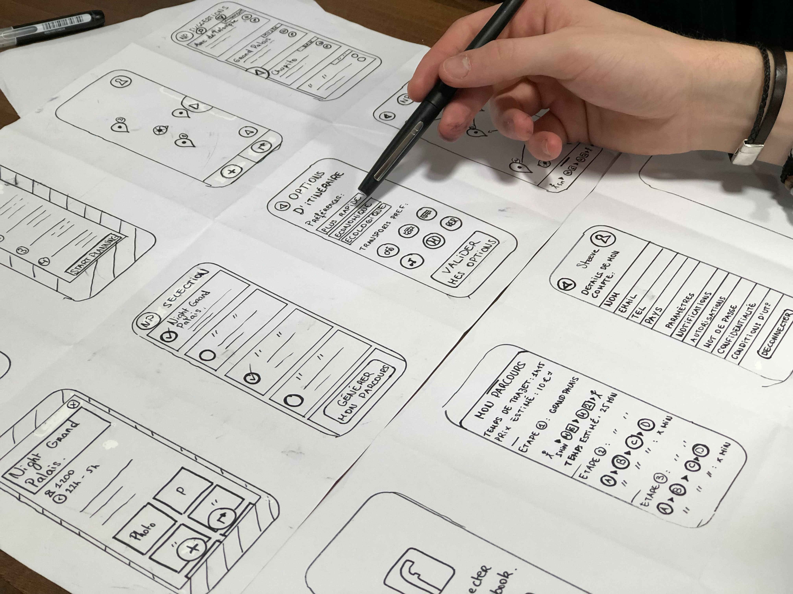

What is Graphic Design?
Graphic design is a craft where professionals create visual content to communicate messages. By applying visual hierarchy and page layout techniques, designers use typography and pictures to meet users’ specific needs and focus on the logic of displaying elements in interactive designs, to optimize the user experience
"Design is intelligence made visible."
Alina Wheeler
Graphic Design is about Molding the User Experience Visually
Graphic design is an ancient craft, dating back past Egyptian hieroglyphs to at least 17,000-year-old cave paintings. It’s a term that originated in the 1920s’ print industry. It continues to cover a range of activities including logo creation. Graphic design in this sense concerns aesthetic appeal and marketing. Graphic designers attract viewers using images, color and typography. However, graphic designers working inuser experience (UX) designmust justify stylistic choices regarding, say, image locations and font with a human-centered approach. That means you need to focus on—and seek to empathize the most with—your specific users while you create good-looking designs that maximize usability. Aesthetics must serve a purpose—in UX design we don’t create art for art’s sake. So, graphic designers must branch into visual design. When designing for UX, you should:
1-Consider the information architecture of your interactive designs, to ensure accessibility for users.
2-Leverage graphic design skills to create work that considers the entire user experience, including users’ visual processing abilities.
For instance, if an otherwise pleasing mobile app can’t offer users what they need in several thumb-clicks, its designer/s will have failed to marry graphic design to user experience. The scope of graphic design in UX covers the creation of beautiful designs that users find highly pleasurable, meaningful and usable.
“Design is a solution to a problem. Art is a question to a problem.”
— John Maeda, President of Rhode Island School of Design

Graphic Design is Emotional Design
Although to work in the digital age means you must design with interactive software, graphic design still revolves around age-old principles. It’s crucial that you strike the right chord with users from their first glance—hence graphic design’s correspondence with emotional design. As a graphic designer, then, you should have a firm understanding of color theory and how vital the right choice of color scheme is. Color choices must reflect not only the organization (e.g., blue suits banking) but also users’ expectations (e.g., red for alerts; green for notifications to proceed). You should design with an eye for how elements match the tone (e.g., sans-serif fonts for excitement or happiness). You also need to design for the overall effect, and note how you shape users’ emotions as you guide them from, for instance, a landing page to a call to action. Often, graphic designers are involved in motion design for smaller screens. They will carefully monitor how their works’ aesthetics match their users’ expectations. They can enhance their designs’ usability in a flowing, seamless experience by anticipating the users’ needs and mindsets. With user psychology in mind, it’s important to stay focused on some especially weighty graphic design considerations, namely these:
1-Symmetry and Balance (including symmetry types)
2-Flow
3-Repetition
4-Pattern
5-The Golden Ratio (i.e., proportions of 1:1.618)
6-The Rule of Thirds (i.e., how users’ eyes recognize good layout)
7-Typography (encompassing everything from font choice to heading weight)
8-Audience Culture (regarding color use—e.g., red as an alert or, in some Eastern cultures, a signal of good fortune—and reading pattern: e.g., left to right in Western cultures)
Graphic Design is about Molding the User Experience Visually
Overall, your mission—as far as graphic design goes in UX and UI design—is toisplay information harmoniously. d You should ensure that beauty and usability go hand in hand, and therefore your design can discreetly carry your organization’s ideals to your users. When you establish a trustworthy visual presence, you hint to users that you know what they want to do – not just because you’ve arranged aesthetically pleasing elements that are where your users expect to find them, or help them intuit their way around, but because the values which your designs display mirror theirs, too. Your visual content will quickly decide your design’s fate, so be sure not to overlook the slightest trigger that may put users off.
"Have no fear of perfection -- you'll never reach it."
Salvador Dali